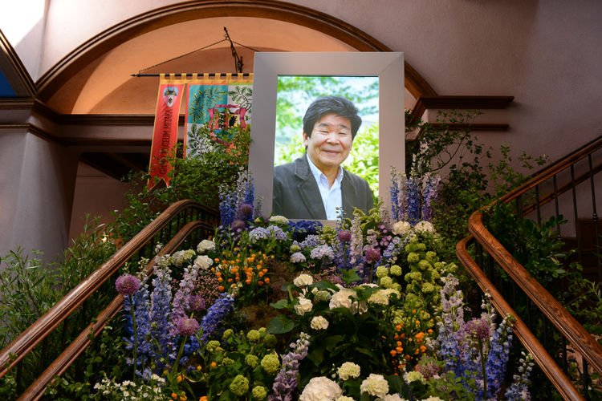

ISAO TAKAHATA
Nacido el 29 de octubre de 1935. Asistió a la Universidad de Tokio, donde se graduó en literatura francesa. Fue la película Le Roi et l'Oiseau del animador francés Paul Grimault lo que le llamó la atención por sus posibilidades y decidió dedicarse al mundo de la animación. Inició su carrera en los estudios de Toei Animation como ayudante de dirección, donde dirigió su primera película, en la que también participó Miyazaki.

Entre 1974 y 1978, también con la intervención de Miyazaki, trabajó en Nippon Animation para World Masterpiece Theater, series de animación para la televisión basadas en clásicos de la literatura infantil y juvenil. La primera obra fue Heidi, la niña de los Alpes. Después dirigió otras dos series de importancia: Marco y Ana de las Tejas Verdes.
Más tarde, él y Miyazaki se independizaron y fundaron Studio Ghibli en 1985, en la cual ha dirigido cinco películas:
La tumba de las luciérnagas, considerada por muchos una de las obras maestras del cine animado japonés, Recuerdos del ayer, Pompoko,
Mis vecinos los Yamada y El cuento de la princesa Kaguya (2013).
Murió el 5 de abril de 2018 a la edad de 82 años debido a un cáncer de pulmón.
Fuente: Wikipedia